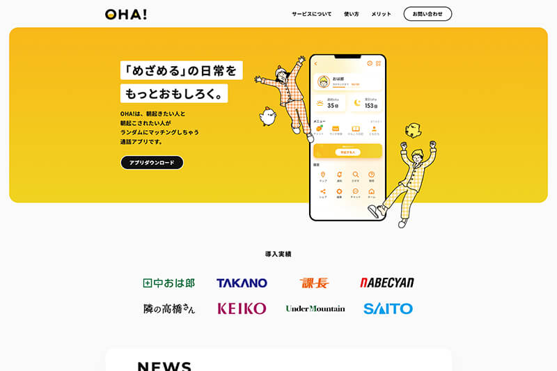

Worksに戻る
Works — Coding
デザインカンプからサイト制作スクール課題
オンラインスクールの課題。デザインカンプからのコーディング練習として制作しました。

Purpose制作の目的
デザインカンプからのコーディング練習として、オンラインスクールの課題で制作。実践を通じて、ピクセルパーフェクトでの再現性、デザイン意図の正確な理解、UI/UXの基本的な考え方を習得することを目指しました。JavaScriptアニメーションの実装やレスポンシブ対応など、総合的なスキル向上も図っています。
Codingコーディングについて
Sass（SCSS記法）で効率的に管理しやすいスタイル設計を行い、CSS設計にはBEMを採用して保守性・拡張性の高いクラス命名を徹底。JavaScriptはドロワーメニュー・アコーディオン・モーダル・スムーススクロール・スクロールアニメーション・Swiperによるスライダーなど、よく使われるインタラクションを実装しました。
HTML構造はアクセシビリティやSEOの基本を意識し、コーディング全体で品質を追求しています。